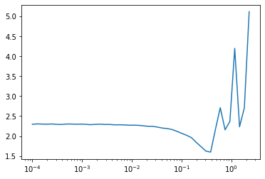
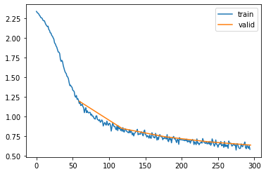

from datasets import load_dataset,load_dataset_builder
from nntrain.dataloaders import DataLoaders, hf_ds_collate_fnnntrain (2/n): Learner
training
momentum
subscribers
learning rate finder
computer vision
In this series, I want to discuss the creation of a small PyTorch based library for training neural networks: nntrain. It’s based off the excellent part 2 of Practical Deep Learning for Coders by Jeremy Howard, in which from lessons 13 to 18 (roughly) the development of the miniai library is discussed.
We’ll try to build everything as much as possible from scratch to understand how things work. Once the main functionality of components is implemented and verified, we can switch over to PyTorch’s version. This is similar to how things are done in the course. However, this is not just a “copy / paste” of the course: on many occasions I take a different route, and most of the code is my own. That is not to say that all of this is meant to be extremely innovative, instead I had the following goals:
- Deeply understand the training of neural networks with a focus on PyTorch
- Try to create an even better narrative then what’s presented in FastAI 🙉🤷♂️🙈
- Get hands-on experience with creating a library with
nb_dev
nb_dev is another great project from the fastai community, which allows python libraries to be written in jupyter notebooks. This may sound a bit weird and controversial, but it has the advantage that we can create the source code for our library in the very same environment in which we want to experiment and interact with our methods, objects and structure while we are building the library. For more details on why this is a good idea and other nice features of nb_dev, see here.
So without further ado, let’s start with where we left off in the previous post:
End of last post:
We finished the last post with exporting the dataloaders module into the nntrain library, which helps transforming a huggingface dataset dictionary into PyTorch dataloaders, so let’s use that:
#| export
import torchvision.transforms.functional as TF
import torch
import torch.nn as nn
import torch.nn.functional as F
from operator import attrgetter
import fastcore.all as fc
import math
from fastprogress import progress_bar,master_bar
import torcheval.metrics as tem
import matplotlib.pyplot as pltname = "fashion_mnist"
ds_builder = load_dataset_builder(name)
hf_dd = load_dataset(name)
bs = 1024
dls = DataLoaders.from_hf_dd(hf_dd, batch_size=bs)
# As a reminder, `DataLoaders` expose a PyTorch train and validation dataloader as `train` and `valid` attributes:
dls.train, dls.validReusing dataset fashion_mnist (/root/.cache/huggingface/datasets/fashion_mnist/fashion_mnist/1.0.0/8d6c32399aa01613d96e2cbc9b13638f359ef62bb33612b077b4c247f6ef99c1)(<torch.utils.data.dataloader.DataLoader>,
<torch.utils.data.dataloader.DataLoader>)Learner Class
Let’s continue to formalize our training loop into a Learner class with a fit() method. The training loop created so far looks like this:
def fit(epochs):
for epoch in range(epochs):
model.train()
n_t = train_loss_s = 0
for xb, yb in dls.train:
preds = model(xb)
train_loss = loss_func(preds, yb)
train_loss.backward()
n_t += len(xb)
train_loss_s += train_loss.item() * len(xb)
opt.step()
opt.zero_grad()
model.eval()
n_v = valid_loss_s = acc_s = 0
for xb, yb in dls.valid:
with torch.no_grad():
preds = model(xb)
valid_loss = loss_func(preds, yb)
n_v += len(xb)
valid_loss_s += valid_loss.item() * len(xb)
acc_s += accuracy(preds, yb) * len(xb)
train_loss = train_loss_s / n_t
valid_loss = valid_loss_s / n_v
acc = acc_s / n_v
print(f'{epoch=} | {train_loss=:.3f} | {valid_loss=:.3f} | {acc=:.3f}')Let’s build this class in steps. Initialization is straight forward:
class Learner():
def __init__(self, model, dls, loss_fn, metric_fn, optim_class, lr):
self.model = model
self.dls = dls
self.loss_fn = loss_fn
self.metric_fn = metric_fn
self.optim = optim_class(model.parameters(), lr)Next, let’s implement the training loop. Instead of writing the full loop in a single fit() method, let’s try to break the training loop down into pieces:
fit()iterates through the epochs- Per epoch we do a training round through the training data and an evaluation round through the validation set. Both rounds are quite similar, so let’s put this functionality in a separate method
one_epoch() - In each epoch we iterate through the batches of a dataloader, let’s put this functionality in a method
one_batch()
@fc.patch
def fit(self:Learner, epochs):
for epoch in range(epochs): # iterate through the epochs
self.one_epoch(epoch, train=True) # one epoch through the training dataloader
with torch.no_grad(): # for the validation epoch we don't need grads
self.one_epoch(epoch, train=False) # one epoch through the validation dataloaderNext, let’s implement one_epoch():
@fc.patch
def one_epoch(self:Learner, epoch, train):
self.reset_stats() # reset the stats at beginning of each epoch
self.model.train(train) # put the model either in train or validation mode
self.dl = self.dls.train if train else self.dls.valid # reference to the active dataloader
for self.batch in self.dl: # iterate through the active dataloader
self.one_batch(train) # do one batch
self.print_stats(epoch, train) # print stats at the end of the epochAnd finally the method responsible for dealing with a single batch of data:
@fc.patch
def one_batch(self:Learner, train):
self.xb, self.yb = self.batch # self.batch is either a training or validation batch
self.preds = self.model(self.xb) # forward pass through the model
self.loss = self.loss_fn(self.preds, self.yb) # loss
if train: # only do a backward and weight update if train
self.loss.backward()
self.optim.step()
self.optim.zero_grad()
self.update_stats() # update statsAnd the methods related to the computation of the statistics:
@fc.patch
def update_stats(self:Learner):
n = len(self.xb)
self.loss_s += self.loss.item() * n
self.metric_s += self.metric_fn(self.preds, self.yb).item() * n
self.counter += n
@fc.patch
def reset_stats(self:Learner):
self.counter = 0
self.loss_s = 0
self.metric_s = 0
@fc.patch
def print_stats(self:Learner, epoch, train):
loss = self.loss_s / self.counter
metric = self.metric_s / self.counter
print(f'{epoch=:02d} | {"train" if train else "eval":<5} | {loss=:.3f} | {metric=:.3f}')Let’s try it out on the data:
n_in = 28*28
n_h = 50
n_out = 10
lr = 0.01
def accuracy(preds, targs):
return (preds.argmax(dim=1) == targs).float().mean()
def get_model():
layers = [nn.Linear(n_in, n_h), nn.ReLU(), nn.Linear(n_h, n_out)]
return nn.Sequential(*layers)
l = Learner(get_model(), dls, F.cross_entropy, accuracy, torch.optim.SGD, lr)
l.fit(5)epoch=00 | train | loss=2.202 | metric=0.240
epoch=00 | eval | loss=2.078 | metric=0.378
epoch=01 | train | loss=1.943 | metric=0.464
epoch=01 | eval | loss=1.802 | metric=0.538
epoch=02 | train | loss=1.667 | metric=0.578
epoch=02 | eval | loss=1.543 | metric=0.601
epoch=03 | train | loss=1.435 | metric=0.628
epoch=03 | eval | loss=1.346 | metric=0.639
epoch=04 | train | loss=1.266 | metric=0.652
epoch=04 | eval | loss=1.207 | metric=0.651Callbacks, pubsub and event handlers
On the one side we want to keep the Learner and its training loop generic on the other side we need to be able to tweak the dynamics of the training loop depending on the use-case. One way to customize the training loop, without having to re-write the training loop would be to add a publish/subscribe (pubsub) mechanism. In fastAI, they are referred to as “callbacks”, and although callbacks, event handlers and pubsub are all somewhat similar, I think pubsub describes better what we are about to implement:
- The Learner framework defines a number of “events” that are published:
before_fit,after_fitbefore_epoch,after_epochbefore_batch,after_batch
- Subscribers are classes that implement methods (e.g.
before_fit()) that will be triggered whenever the associated event is published. They also have anorderattribute which determines the order in which they are called in case multiple Subscribers subscribed to the same event. - As an additional feature, subscribers will be able to redirect flow, but we will come back to that later
So let’s implement this. First, we will need to store a list of subscribers in the Learner class:
class Learner():
def __init__(self, model, dls, loss_fn, metric_fn, optim_class, lr, subs):
self.model = model
self.dls = dls
self.loss_fn = loss_fn
self.metric_fn = metric_fn
self.optim = optim(model.parameters(), lr)
self.subs = subsNext, let’s define a method for publishing events. The method will go through the registered subscribers and if a method with the name of the event is declared, call that method passing the learner object as an argument:
@fc.patch
def publish(self:Learner, event):
for sub in sorted(self.subs, key=attrgetter('order')):
method = getattr(sub, name, None)
if method is not None: method(self)With the before_x / after_x events, realize that we have three times the same construct:
publish "before_event" event
do event
publish "after_event" eventWith event being either fit, epoch or batch. So instead of adding this construct multiple times in the training loop let’s define a class we can use as a decorater wrapping the do_event logic:
#| export
class PublishEvents():
def __init__(self, event):
self.event = event
def __call__(self, decorated_fn):
def decorated_fn_with_publishing(learner, *args, **kwargs):
learner.publish(f'before_{self.event}')
decorated_fn(learner, *args, **kwargs)
learner.publish(f'after_{self.event}')
return decorated_fn_with_publishingTo implement this into the Learner we have to factor out the exact code we want to be executed in between the publishing of the before and after, see the additional _one_epoch() method.
Note that we are taking out the logic concerning the statistics, this will be implemented as a Subscriber as we’ll see.
class Learner():
def __init__(self, model, dls, loss_fn, metric_fn, optim_class, lr, subs):
self.model = model
self.dls = dls
self.loss_fn = loss_fn
self.metric_fn = metric_fn
self.optim = optim_class(model.parameters(), lr)
self.subs = subs
@PublishEvents('fit')
def fit(self, epochs):
for epoch in range(epochs):
self.one_epoch(epoch, train=True)
with torch.no_grad():
self.one_epoch(epoch, train=False)
def one_epoch(self, epoch, train):
self.model.train(train)
self.dl = self.dls.train if train else self.dls.valid
self._one_epoch(epoch, train)
@PublishEvents('epoch')
def _one_epoch(self, epoch, train):
for self.batch in self.dl:
self.xb, self.yb = self.batch
self.one_batch(train)
@PublishEvents('batch')
def one_batch(self, train):
self.preds = self.model(self.xb)
self.loss = self.loss_fn(self.preds, self.yb)
if train:
self.loss.backward()
self.optim.step()
self.optim.zero_grad()
def publish(self, event):
for sub in sorted(self.subs, key=attrgetter('order')):
method = getattr(sub, event, None)
if method is not None: method(self) Let’s create a dummy subscriber and test it out:
#| export
class Subscriber():
order = 0
class DummyS(Subscriber):
def before_fit(self, learn):
print('before fit👋')
def after_fit(self, learn):
print('after fit👋')
def before_epoch(self, learn):
print('before epoch 💥')
def after_epoch(self, learn):
print('after epoch 💥')l = Learner(get_model(), dls, F.cross_entropy, accuracy, torch.optim.SGD, lr, [DummyS()])
l.fit(1)before fit👋
before epoch 💥
after epoch 💥
before epoch 💥
after epoch 💥
after fit👋Subscribers can cancel execution
Now let’s add the last component of our pubsub system: subscribers should be able to cancel processing. For example, a a subscriber that would implement Early Stopping, will have to be able to cancel any further epochs when the validation loss starts increasing. One way to implement this, is with the help of Exceptions and try / except blocks:
It’s actually very easy to implement this logic, we only need to define custom Exceptions, and update the PublishEvents class to catch the exceptions that are thrown in any subscriber:
class CancelFitException(Exception): pass
class CancelEpochException(Exception): pass
class CancelBatchException(Exception): pass
class PublishEvents():
def __init__(self, name):
self.name = name
def __call__(self, decorated_fn):
def decorated_fn_with_publishing(learner, *args, **kwargs):
try:
learner.publish(f'before_{self.name}')
decorated_fn(learner, *args, **kwargs)
learner.publish(f'after_{self.name}')
except globals()[f'Cancel{self.name.title()}Exception']: pass
return decorated_fn_with_publishingclass DummyS(Subscriber):
def before_fit(self, learn): print('before fit👋')
def before_epoch(self, learn): raise CancelFitException
def after_fit(self, learn): print('after fit 👋')l = Learner(get_model(), dls, F.cross_entropy, accuracy, torch.optim.SGD, lr, [DummyS()])
l.fit(5)before fit👋And indeed, the after_fit event is never called, since the fit was cancelled during before_epoch by the dummy subscriber
Final version of Learner
We are going to make some final changes to the Learner class:
- factor out the computation of the following logic. This is practical to create subclasses of
Learnerwith custom behavior:- prediction:
self.predict() - loss:
self.get_loss() - backward pass:
self.backward() - stepping of weights:
self.step() - zeroing of gradients:
self.zero_grad()
- prediction:
- add a Subscriber argument to
fit, these subs will only be added for the duration of the fit, and afterwards removed - add a couple of additional events (
after_predict,after_loss,after_backwardandafter_step) to which subscribers can listen
#| export
class Learner():
def __init__(self, model, dls, loss_fn, optim_class, lr, subs):
self.model = model
self.dls = dls
self.loss_fn = loss_fn
self.optim_class = optim_class
self.lr = lr
self.subs = subs
def fit(self, epochs, train=True, valid=True, subs=[], lr=None):
for sub in subs: self.subs.append(sub)
self.n_epochs = epochs
self.epochs = range(self.n_epochs)
lr = self.lr if lr is None else lr
self.opt = self.optim_class(self.model.parameters(), lr)
try:
self._fit(train, valid)
finally:
for sub in subs: self.subs.remove(sub)
@PublishEvents('fit')
def _fit(self, train, valid):
for self.epoch in self.epochs:
if train:
self.one_epoch(True)
if valid:
with torch.no_grad():
self.one_epoch(False)
def one_epoch(self, train):
self.model.train(train)
self.dl = self.dls.train if train else self.dls.valid
self._one_epoch()
@PublishEvents('epoch')
def _one_epoch(self):
for self.batch in self.dl:
self.one_batch()
@PublishEvents('batch')
def one_batch(self):
self.predict()
self.publish('after_predict')
self.get_loss()
self.publish('after_loss')
if self.model.training:
self.backward()
self.publish('after_backward')
self.step()
self.publish('after_step')
self.zero_grad()
def publish(self, event):
for sub in sorted(self.subs, key=attrgetter('order')):
method = getattr(sub, event, None)
if method is not None: method(self)
def predict(self):
self.preds = self.model(self.batch[0])
def get_loss(self):
self.loss = self.loss_fn(self.preds, self.batch[1])
def backward(self): self.loss.backward()
def step(self): self.opt.step()
def zero_grad(self): self.opt.zero_grad()Metrics Subscriber
Since we took out the metrics, let’s create a subscriber that adds that. We want the subscriber to be generic, to it should be able to accept one or multiple metrics. Let’s make sure that it can accept the metrics from the torcheval library:
metric = tem.Mean()
metric.update(torch.tensor([1,2,3])) # update() adds data
metric.update(torch.tensor([4,5,6]))
print(metric.compute()) # compute() computes the metric
metric.reset() # remove all data
print(metric.compute())WARNING:root:No calls to update() have been made - returning 0.0tensor(3.5000, dtype=torch.float64)
tensor(0., dtype=torch.float64) #|export
class MetricsS(Subscriber):
def __init__(self, **metrics):
self.metrics = metrics
self.loss = tem.Mean()
def before_fit(self, learn):
learn.metrics = self
def before_epoch(self, learn):
for m in self.metrics.values(): m.reset()
self.loss.reset()
def after_batch(self, learn):
x,y,*_ = self.to_cpu(learn.batch)
for m in self.metrics.values(): m.update(self.to_cpu(learn.preds), y)
self.loss.update(self.to_cpu(learn.loss), weight=len(x))
def after_epoch(self, learn):
log = {
'epoch': learn.epoch,
'mode': 'train' if learn.model.training else 'eval',
'loss' : f'{self.loss.compute():.3f}'
}
for k, v in self.metrics.items():
log[k] = f'{v.compute():.3f}'
self.output(log)
def to_cpu(self, x):
if isinstance(x, list): return (self.to_cpu(el) for el in x)
return x.detach().cpu()
def output(self, log): print(log)metrics_s = MetricsS(accuracy=tem.MulticlassAccuracy())
l = Learner(get_model(), dls, F.cross_entropy, torch.optim.SGD, lr, [metrics_s])
l.fit(1){'epoch': 0, 'mode': 'train', 'loss': '2.220', 'accuracy': '0.206'}
{'epoch': 0, 'mode': 'eval', 'loss': '2.121', 'accuracy': '0.352'}Device Subscriber
It’s time we start training on the GPU, to do that we have to move the model (and it’s parameters) as well as all the data onto the GPU. We can easily do this with a Subscriber:
- move the model (and all it’s trainable parameters) to the device before fit
- move each batch to the device before batch
#| export
device = torch.device("cuda" if torch.cuda.is_available() else "cpu")
class DeviceS(Subscriber):
def __init__(self, device):
self.device = device
def before_fit(self, learn):
learn.model.to(self.device)
def before_batch(self, learn):
learn.batch = [x.to(self.device) for x in learn.batch]device_s = DeviceS(device)
l = Learner(get_model(), dls, F.cross_entropy, torch.optim.SGD, lr, [metrics_s, device_s])
l.fit(1){'epoch': 0, 'mode': 'train', 'loss': '2.209', 'accuracy': '0.256'}
{'epoch': 0, 'mode': 'eval', 'loss': '2.115', 'accuracy': '0.306'}Learning Rate Finder
The learning rate finder is very simple technique that can be used to find a good learning rate for training a network. It works like this:
- Start with a very small learning rate
- Do a forward pass through the network of a single batch of data and record the loss
- Increase the learning rate with constant factor
- Do another forward pass through the network of a single batch and record the loss
- Continue to do this until at some point the loss “explodes”: for example because the current loss is 3 times as large as the minimum loss recorded so far
After this, we plot the learning rate vs the recorded losses and look for a learning rate at which the loss is decreasing the most (i.e. the point where the loss has the smallest derivative).
#| export
class LRFindS(Subscriber):
def __init__(self, mult=1.25):
self.mult = mult
self.min = math.inf
def before_epoch(self, learn):
if not learn.model.training: raise CancelFitException
self.losses = []
self.lrs = []
def after_loss(self, learn):
lr = learn.opt.param_groups[0]['lr']
self.lrs.append(lr)
loss = learn.loss.detach().cpu()
self.losses.append(loss)
if loss < self.min: self.min = loss
if loss > self.min*3: raise CancelFitException()
for g in learn.opt.param_groups: g['lr'] = lr * self.mult
def plot(self):
plt.plot(self.lrs, self.losses)
plt.xscale('log')l = Learner(get_model(), dls, F.cross_entropy, torch.optim.SGD, lr, [metrics_s, device_s])
lrfind_s = LRFindS()
l.fit(5, lr=1e-4, subs=[lrfind_s])lrfind_s.plot()
From which we see that a learning rate of around 0.2 would be best
MomentumLearner
Additionally, we can easily subclass Learner, and implement custom functionality into any of its 5 main functionalities:
- prediction:
self.predict() - loss:
self.get_loss() - backward pass:
self.backward() - stepping of weights:
self.step() - zeroing of gradients:
self.zero_grad()
For example we can create a MomentumLearner which doesn’t just use the gradient of the last backward pass, but uses an exponentially weighted average of all previously computed gradients. We can do this by instead of zeroing out the gradients, only reduce them by a factor between 0 and 1 (the momentum parameter). This way the “gradient with momentum” at time \(t\) (\(m_t\)), will be a function of the normal gradient (\(g_t\)):
\[ m_t = g_t + c \cdot g_{t-1} + c^2 \cdot g_{t-2} + ... \]
This is called momentum and the idea is to add a sense of “inertia” to the gradients, i.e. if in one step we are moving through the loss manifold in a certain direction, then in the next step we want to keep moving somewhat in that direction irrespective of the gradient of the current step.
#| export
class MomentumLearner(Learner):
def __init__(self, model, dls, loss_fn, optim_class, lr, subs, mom=0.85):
self.mom = mom
super().__init__(model, dls, loss_fn, optim_class, lr, subs)
def zero_grad(self):
with torch.no_grad():
for p in self.model.parameters(): p.grad *= self.moml = MomentumLearner(get_model(), dls, F.cross_entropy, torch.optim.SGD, lr, [metrics_s, device_s])
l.fit(5){'epoch': 0, 'mode': 'train', 'loss': '1.657', 'accuracy': '0.481'}
{'epoch': 0, 'mode': 'eval', 'loss': '1.105', 'accuracy': '0.647'}
{'epoch': 1, 'mode': 'train', 'loss': '0.925', 'accuracy': '0.685'}
{'epoch': 1, 'mode': 'eval', 'loss': '0.831', 'accuracy': '0.695'}
{'epoch': 2, 'mode': 'train', 'loss': '0.763', 'accuracy': '0.732'}
{'epoch': 2, 'mode': 'eval', 'loss': '0.736', 'accuracy': '0.739'}
{'epoch': 3, 'mode': 'train', 'loss': '0.686', 'accuracy': '0.764'}
{'epoch': 3, 'mode': 'eval', 'loss': '0.675', 'accuracy': '0.766'}
{'epoch': 4, 'mode': 'train', 'loss': '0.635', 'accuracy': '0.784'}
{'epoch': 4, 'mode': 'eval', 'loss': '0.634', 'accuracy': '0.779'}And this simple technique has a pretty good effect on training our model: the accuracy on the validation set is increasing (even with this simple linear model) from 66% with normal SGD to 78% with momentum.
Closing remarks
In this post we have again covered a lot of ground. We have created a very flexible Learner framework, making heavy use of a pubsub system to customize the training loop. As examples we have seen a Subscriber that enables training on the GPU, and another one that takes care of tracking the loss and the metrics while we are training. Additionally we have implement the learning rate finder as a Subscriber, and last but not least we have seen how we can subclass the Learner class to create custom learners that for example implement momentum. Below I have added one additional Subscriber that displays the progress of the loss a bit nicer in a graph, as well as puts the outputs in a table. It has been copied from the miniai library as is (with some minor changes to make it work for nntrain).
#| export
class ProgressS(Subscriber):
order = MetricsS.order+1
def __init__(self, plot=False): self.plot = plot
def before_fit(self, learn):
learn.epochs = self.mbar = master_bar(learn.epochs)
self.first = True
if hasattr(learn, 'metrics'): learn.metrics.output = self.output
self.losses = []
self.val_losses = []
def output(self, d):
if self.first:
self.mbar.write(list(d), table=True)
self.first = False
self.mbar.write(list(d.values()), table=True)
def before_epoch(self, learn): learn.dl = progress_bar(learn.dl, leave=False, parent=self.mbar)
def after_batch(self, learn):
learn.dl.comment = f'{learn.loss:.3f}'
if self.plot and hasattr(learn, 'metrics') and learn.model.training:
self.losses.append(learn.loss.item())
if self.val_losses: self.mbar.update_graph([[fc.L.range(self.losses), self.losses],[fc.L.range(learn.epoch).map(lambda x: (x+1)*len(learn.dls.train)), self.val_losses]])
def after_epoch(self, learn):
if not learn.model.training:
if self.plot and hasattr(learn, 'metrics'):
self.val_losses.append(learn.metrics.loss.compute())
self.mbar.update_graph([[fc.L.range(self.losses), self.losses],[fc.L.range(learn.epoch+1).map(lambda x: (x+1)*len(learn.dls.train)), self.val_losses]])progress_s = ProgressS(True)
l = MomentumLearner(get_model(), dls, F.cross_entropy, torch.optim.SGD, lr, [metrics_s, device_s, progress_s])
l.fit(5)| epoch | mode | loss | accuracy |
|---|---|---|---|
| 0 | train | 1.818 | 0.425 |
| 0 | eval | 1.192 | 0.640 |
| 1 | train | 0.965 | 0.676 |
| 1 | eval | 0.845 | 0.693 |
| 2 | train | 0.772 | 0.730 |
| 2 | eval | 0.740 | 0.737 |
| 3 | train | 0.690 | 0.762 |
| 3 | eval | 0.676 | 0.765 |
| 4 | train | 0.636 | 0.784 |
| 4 | eval | 0.634 | 0.780 |
